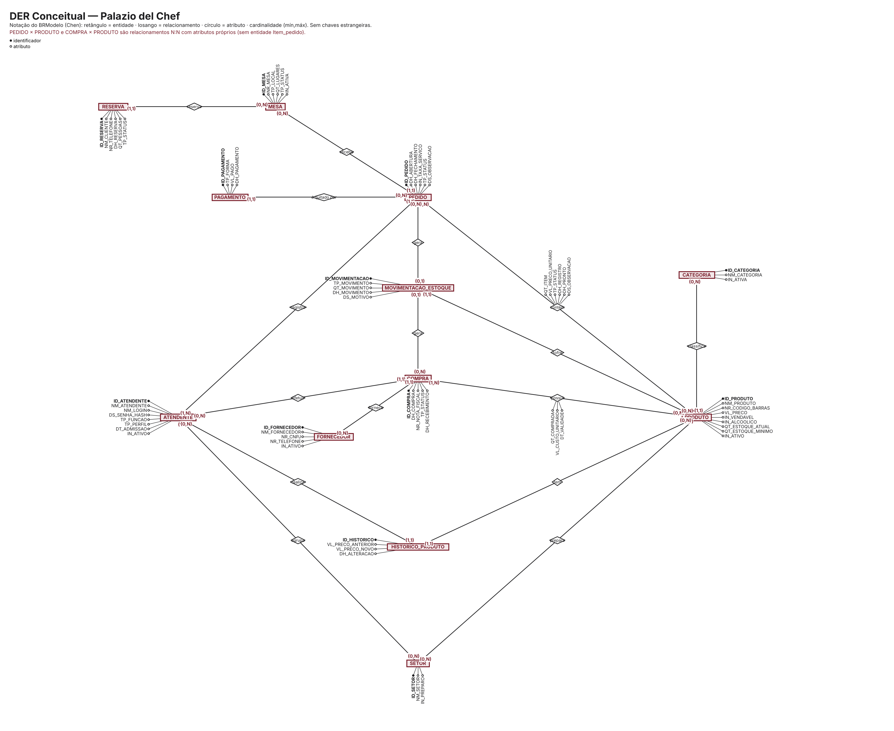

Versão 2.0 · 07/10/2026 · Entrega 1 · Modelagem de Banco de Dados (UNICID) · Todos os exemplos são fictícios.
Segue o modelo do arquivo 02-03g da disciplina. A versão completa em HTML está em
dicionario_dados_palazio/index.html. Privacidade: todos os exemplos de valores são fictícios.[VALIDAR]Os atributos são uma proposta. Confira com o dicionário e o DER que o grupo já fez e ajuste o que divergir.
Segue o modelo do arquivo 02-03g da disciplina. A versão completa em HTML está em
dicionario_dados_palazio/index.html. Privacidade: todos os exemplos de valores são fictícios.[VALIDAR]Os atributos são uma proposta. Confira com o dicionário e o DER que o grupo já fez e ajuste o que divergir.
Segue o modelo do arquivo 02-03g da disciplina. A versão completa em HTML está em
dicionario_dados_palazio/index.html. Privacidade: todos os exemplos de valores são fictícios.[VALIDAR]Os atributos são uma proposta. Confira com o dicionário e o DER que o grupo já fez e ajuste o que divergir.
Segue o modelo do arquivo 02-03g da disciplina. A versão completa em HTML está em
dicionario_dados_palazio/index.html. Privacidade: todos os exemplos de valores são fictícios.[VALIDAR]Os atributos são uma proposta. Confira com o dicionário e o DER que o grupo já fez e ajuste o que divergir.
Segue o modelo do arquivo 02-03g da disciplina. A versão completa em HTML está em
dicionario_dados_palazio/index.html. Privacidade: todos os exemplos de valores são fictícios.[VALIDAR]Os atributos são uma proposta. Confira com o dicionário e o DER que o grupo já fez e ajuste o que divergir.
Este modelo representa um restaurante e bar em que o cliente, com ou sem reserva, é atendido em uma mesa (ou bistrô). Um atendente (o garçom) registra o pedido, que contém produtos (com quantidade, preço e status de preparo). Cada produto que pertence a uma categoria do cardápio e é preparado no setor (cozinha ou bar), e a conta é quitada por um ou mais pagamentos. O estoque dos produtos é reposto por compras a fornecedores e controlado por movimentações.
| Entidade | Relaciona-se com | Cardinalidade |
|---|---|---|
| SETOR | ATENDENTE | 1:N — um setor tem vários funcionários; cada funcionário atua em um setor |
| SETOR | PRODUTO | 1:N — um setor (cozinha ou bar) prepara vários produtos; cada produto tem um setor de preparo |
| ATENDENTE | PEDIDO | 1:N — um atendente registra um ou vários pedidos (1,N); cada pedido tem exatamente um atendente (1,1), conforme orientação do professor |
| MESA | RESERVA | 1:N — uma mesa pode ser reservada várias vezes; cada reserva é de uma mesa |
| CATEGORIA | PRODUTO | 1:N — uma categoria do cardápio agrupa vários produtos; cada produto tem uma categoria |
| MESA | PEDIDO | 1:N — uma mesa recebe vários pedidos ao longo do tempo; cada pedido está em uma única mesa |
| PEDIDO × PRODUTO | contém (N:N, com atributos) | N:N — um pedido contém um ou mais produtos (1,N); um produto pode estar em vários pedidos (0,N). A quantidade, o preço unitário, o status de preparo, o horário e a observação são atributos do relacionamento (não há entidade Item_pedido, conforme orientação do professor) |
| PEDIDO | PAGAMENTO | 1:N — um pedido tem zero (aberto) ou vários pagamentos; cada pagamento quita um pedido |
| PRODUTO | HISTORICO_PRODUTO | 1:N — um produto tem várias alterações de preço registradas |
| ATENDENTE | HISTORICO_PRODUTO | 1:N — um atendente (gerência) registra várias alterações de preço |
| FORNECEDOR | COMPRA | 1:N — um fornecedor atende várias compras; cada compra é de um fornecedor |
| ATENDENTE | COMPRA | 1:N — um atendente (gerência) efetua várias compras; cada compra tem um responsável |
| COMPRA × PRODUTO | possui (N:N, com atributos) | N:N — uma compra possui um ou mais produtos (1,N); um produto pode estar em várias compras (0,N). Quantidade, custo unitário e validade são atributos do relacionamento |
| PRODUTO | MOVIMENTACAO_ESTOQUE | 1:N — um produto tem várias movimentações; cada movimentação é de um produto |
| PEDIDO | MOVIMENTACAO_ESTOQUE | 1:N opcional — um pedido gera baixas (e, se cancelado, estornos) (0,N); uma movimentação pode ou não ter origem em um pedido (0,1) |
| COMPRA | MOVIMENTACAO_ESTOQUE | 1:N opcional — uma compra recebida gera entradas (0,N); uma movimentação pode ou não ter origem em uma compra (0,1) |
Definições. Setor é a área de trabalho (salão, cozinha, bar, gerência, limpeza). Categoria é o grupo do cardápio (lanches, pratos, porções, sobremesas, bebidas etc.). Reserva é a mesa guardada por telefone, para uma data e hora. Atendente é o funcionário com credencial individual. Mesa é o local do cliente. Produto é o item vendido e estocado. Pedido é o atendimento de uma mesa. Contém é o relacionamento entre pedido e produto, com quantidade, preço unitário e status. Pagamento é a quitação, total ou parcial, do pedido. Fornecedor é a empresa que vende mercadoria. Compra é o pedido de mercadoria a um fornecedor. Possui é o relacionamento entre compra e produto, com quantidade, custo e validade. Movimentação de estoque é cada entrada, saída, estorno ou ajuste do saldo de um produto. Histórico do produto é o registro de cada alteração de preço.
O cliente reserva por telefone (RESERVA, ligada a uma MESA) ou entra e vê se há lugar → o atendente (autenticado em ATENDENTE) abre um PEDIDO em uma MESA → o PEDIDO contém PRODUTOS (relacionamento com quantidade, preço e status), e cada produto carrega a CATEGORIA do cardápio e o SETOR de preparo → cada produto lançado no pedido gera uma baixa em MOVIMENTACAO_ESTOQUE e atualiza o saldo do PRODUTO → cozinha e bar atualizam o status do item → o cliente paga e cada forma usada vira um registro em PAGAMENTO → com a soma dos pagamentos igual ao total, o PEDIDO é fechado e a MESA liberada. Quando o saldo do PRODUTO chega ao mínimo, a gerência registra uma COMPRA a um FORNECEDOR, com os produtos comprados → no recebimento, cada produto gera uma entrada em MOVIMENTACAO_ESTOQUE. Os reajustes de preço feitos pela gerência geram registros em HISTORICO_PRODUTO. Toda leitura ou escrita relevante é registrada no log do SGBD (seção 5.5), o que sustenta a auditoria e a conformidade com a LGPD (seção 5.6).
NM_ nome · DT_ data · DH_ data e hora · ID_ identificador (não sofre operação matemática) · QT_ quantidade · VL_ valor monetário · NR_ número · TP_ tipo (categorização) · IN_ indicador booleano · DS_ descrição ou texto livre.= é composto de · + e (elementos obrigatórios) · ( ) opcional · [ | ] escolha obrigatória entre alternativas · @ identificador (chave primária).SETOR = @ID_SETOR + NM_SETOR + IN_PREPARO
| Atributo | Tipo | Obrig. | Descrição | Regra de negócio associada |
|---|---|---|---|---|
| ID_SETOR | integer | Sim (PK) | Identificador do setor. | — |
| NM_SETOR | varchar(30) | Sim | Nome do setor. Ex.: Salão, Cozinha, Bar, Gerência, Limpeza. | Único. |
| IN_PREPARO | boolean | Sim | Indica se o setor prepara produtos. | Verdadeiro para Cozinha e Bar; falso para Salão, Gerência e Limpeza. Só esses setores podem ser setor de preparo de um produto (RN06). |
Índices: PK ID_SETOR; índice único em NM_SETOR.
ATENDENTE = @ID_ATENDENTE + ID_SETOR + NM_ATENDENTE + NM_LOGIN + DS_SENHA_HASH + TP_FUNCAO + TP_PERFIL + DT_ADMISSAO + IN_ATIVO
Leitura: TP_FUNCAO exige escolher a função do funcionário: Garçom, Caixa, Cozinha, Bar, Gerente, Sócio ou Limpeza. TP_PERFIL exige escolher um perfil entre Atendimento (A), Preparo (P), Gerência (G) e Sócio (S). Todos os campos são obrigatórios. A equipe de limpeza só é cadastrada se precisar de acesso [VALIDAR].
| Atributo | Tipo | Obrig. | Descrição | Regra de negócio associada |
|---|---|---|---|---|
| ID_ATENDENTE | integer | Sim (PK) | Identifica individualmente cada atendente que registra pedidos. | Base da rastreabilidade (RN01). |
| ID_SETOR | integer | Sim (FK) | Setor em que o funcionário atua. | Define quais informações ele visualiza (RNF01). |
| NM_ATENDENTE | varchar(120) | Sim | Nome completo. Ex.: "Mariana Costa" (fictício). | — |
| NM_LOGIN | varchar(30) | Sim | Credencial de acesso. Ex.: "mariana.costa". | Único (RN12). |
| DS_SENHA_HASH | varchar(255) | Sim | Senha armazenada em hash. | Nunca em texto puro (RNF03). |
| TP_FUNCAO | varchar(10) (GARCOM, CAIXA, COZINHA, BAR, GERENTE, SOCIO, LIMPEZA) | Sim | Função do funcionário no estabelecimento, conforme orientação do professor de especificar a função de cada atendente. [VALIDAR: se a lista de funções está completa] |
Define o trabalho, o setor e o perfil de acesso padrão. |
| TP_PERFIL | char(1) (A, P, G, S) | Sim | Perfil de acesso: Atendimento (garçom), Preparo (cozinha ou bar), Gerência ou Sócio (proprietário). | Define as permissões (RNF02). |
| DT_ADMISSAO | date | Sim | Data de admissão. | Não pode ser futura. |
| IN_ATIVO | boolean | Sim | Se o funcionário está ativo. | Inativo não registra pedidos e mantém o histórico (RN04, RN13). |
Índices: PK ID_ATENDENTE; índice único em NM_LOGIN (autenticação); índice em ID_SETOR.
MESA = @ID_MESA + NR_MESA + TP_LOCAL + QT_LUGARES + TP_STATUS + IN_ATIVA
Leitura: TP_LOCAL é Mesa (M) ou Bistrô (B). TP_STATUS é Livre (L) ou Ocupada (O).
| Atributo | Tipo | Obrig. | Descrição | Regra de negócio associada |
|---|---|---|---|---|
| ID_MESA | integer | Sim (PK) | Identificador interno da mesa. | — |
| NR_MESA | smallint | Sim | Número da mesa, usado pelo atendente. Ex.: 12. | Único (RN02). |
| TP_LOCAL | char(1) (M, B) | Sim | Tipo de lugar: mesa ou bistrô. O salão tem cerca de 30 mesas e 25 bistrôs. | Domínio fechado. |
| QT_LUGARES | smallint | Sim | Quantidade de lugares. | Maior que zero. |
| TP_STATUS | char(1) (L, O) | Sim | Situação: Livre ou Ocupada. | Ocupada ao abrir o pedido, livre ao fechar (RN05, RN10). |
| IN_ATIVA | boolean | Sim | Se a mesa está em uso. | Mesa inativa não recebe pedidos (RN13). |
Índices: PK ID_MESA; índice único em NR_MESA.
PRODUTO = @ID_PRODUTO + ID_SETOR + ID_CATEGORIA + NM_PRODUTO + NR_CODIGO_BARRAS + VL_PRECO + IN_VENDAVEL + IN_ALCOOLICO + QT_ESTOQUE_ATUAL + QT_ESTOQUE_MINIMO + IN_ATIVO
| Atributo | Tipo | Obrig. | Descrição | Regra de negócio associada |
|---|---|---|---|---|
| ID_PRODUTO | integer | Sim (PK) | Identificador do produto. | — |
| ID_SETOR | integer | Sim (FK) | Setor responsável pelo preparo (Cozinha ou Bar). | Setor com IN_PREPARO verdadeiro (RN06). |
| ID_CATEGORIA | integer | Sim (FK) | Categoria do cardápio do produto. | Todo produto tem uma categoria (RN29). |
| NM_PRODUTO | varchar(80) | Sim | Nome no cardápio, com a variação de tamanho quando houver. Ex.: "Risoto de cogumelos", "Bife de contrafilé (2 pessoas)". | Variações são produtos distintos (RN27). |
| NR_CODIGO_BARRAS | varchar(14) | Sim | Código de barras. | Único (RN03). [VALIDAR] |
| VL_PRECO | decimal(8,2) | Sim | Preço de venda atual. | Maior que zero. Reajuste não altera pedidos antigos (RN07). Só a gerência altera (RN24). |
| IN_VENDAVEL | boolean | Sim | Verdadeiro para item do cardápio. Falso para insumo (ingrediente), que só tem estoque. | Só item vendável entra em pedido (RN14, RN30). |
| IN_ALCOOLICO | boolean | Sim | Indica bebida alcoólica. | Venda só para maiores de 18 anos, com conferência de documento (RN18). |
| QT_ESTOQUE_ATUAL | integer | Sim | Quantidade disponível. | Não pode ser negativa (RN08). É a soma das movimentações (RN21). [VALIDAR] |
| QT_ESTOQUE_MINIMO | integer | Sim | Quantidade que dispara o alerta de reposição. | Alerta de reposição (RN20). |
| IN_ATIVO | boolean | Sim | Se o produto está no cardápio. | Inativo não pode ser pedido (RN13, RN14). |
Índices: PK ID_PRODUTO; índice único em NR_CODIGO_BARRAS; índice em ID_SETOR; índice em ID_CATEGORIA; índice em NM_PRODUTO (busca no lançamento do pedido).
HISTORICO_PRODUTO = @ID_HISTORICO + ID_PRODUTO + ID_ATENDENTE + VL_PRECO_ANTERIOR + VL_PRECO_NOVO + DH_ALTERACAO
| Atributo | Tipo | Obrig. | Descrição | Regra de negócio associada |
|---|---|---|---|---|
| ID_HISTORICO | integer | Sim (PK) | Identificador do registro. | — |
| ID_PRODUTO | integer | Sim (FK) | Produto alterado. | — |
| ID_ATENDENTE | integer | Sim (FK) | Quem fez a alteração. | Perfil de Gerência (RN24). |
| VL_PRECO_ANTERIOR | decimal(8,2) | Sim | Preço antes da alteração. | — |
| VL_PRECO_NOVO | decimal(8,2) | Sim | Preço depois da alteração. | Maior que zero. |
| DH_ALTERACAO | timestamp | Sim | Data e hora da alteração. | Automática. |
Índices: PK ID_HISTORICO; índice em (ID_PRODUTO, DH_ALTERACAO).
PEDIDO = @ID_PEDIDO + ID_MESA + ID_ATENDENTE + DH_ABERTURA + (DH_FECHAMENTO) + IN_TAXA_SERVICO + TP_STATUS + (DS_OBSERVACAO)
Leitura: DH_FECHAMENTO e DS_OBSERVACAO são opcionais. TP_STATUS é Aberto (A), Fechado (F) ou Cancelado (C).
| Atributo | Tipo | Obrig. | Descrição | Regra de negócio associada |
|---|---|---|---|---|
| ID_PEDIDO | integer | Sim (PK) | Identificador do pedido. | — |
| ID_MESA | integer | Sim (FK) | Mesa do pedido. | Obrigatório: não existe pedido sem mesa (RN02). Uma mesa tem no máximo um pedido aberto (RN05). |
| ID_ATENDENTE | integer | Sim (FK) | Atendente que registrou o pedido. | Obrigatório e ativo (RN01, RN04). |
| DH_ABERTURA | timestamp | Sim | Data e hora de abertura. | Automática. |
| DH_FECHAMENTO | timestamp | Não | Data e hora de fechamento. | Obrigatória quando o status for Fechado (RN10). |
| IN_TAXA_SERVICO | boolean | Sim | Se a taxa de serviço de 10% foi cobrada neste pedido. | Padrão: verdadeiro. Falso quando o cliente pede para retirar a taxa (RN16). |
| TP_STATUS | char(1) (A, F, C) | Sim | Aberto, Fechado ou Cancelado. | Fecha só se estiver pago (RN10). |
| DS_OBSERVACAO | varchar(200) | Não | Observação geral. | — |
O total do pedido não é atributo: é derivado (RN11), assim como o valor da taxa de serviço (10% dos itens, RN16).
Índices: PK ID_PEDIDO; índice em ID_MESA; índice em ID_ATENDENTE; índice em DH_ABERTURA (relatórios por período); índice único parcial em ID_MESA para pedidos abertos (RN05).
CONTÉM = ID_PEDIDO + ID_PRODUTO + QT_ITEM + VL_PRECO_UNITARIO + TP_STATUS + DH_REGISTRO + (DH_PRONTO) + (DS_OBSERVACAO)
Leitura: TP_STATUS é Pendente (P), Em preparo (E), Pronto (R), Entregue (N) ou Cancelado (C).
| Atributo | Tipo | Obrig. | Descrição | Regra de negócio associada |
|---|---|---|---|---|
| ID_PEDIDO | integer | Sim (ref.) | Pedido ao qual pertence (lado do relacionamento, não é chave estrangeira no DER). | Só em pedido aberto. |
| ID_PRODUTO | integer | Sim (ref.) | Produto pedido (lado do relacionamento). | Produto ativo e com estoque (RN08, RN13, RN14). |
| QT_ITEM | smallint | Sim | Quantidade pedida. | Maior que zero. |
| VL_PRECO_UNITARIO | decimal(8,2) | Sim | Preço unitário no momento do pedido. | Cópia do preço vigente (RN07). |
| TP_STATUS | char(1) (P, E, R, N, C) | Sim | Pendente, Em preparo, Pronto, Entregue ou Cancelado. | Cancela só se pendente (RN09, RN17). O setor do produto determina quem atualiza (RN06). |
| DH_REGISTRO | timestamp | Sim | Quando o item foi lançado. | Automática. |
| DH_PRONTO | timestamp | Não | Quando o item ficou pronto. | Preenchida quando o status passa a Pronto. Permite medir o tempo de preparo. |
| DS_OBSERVACAO | varchar(100) | Não | Observação do cliente. Ex.: "sem gelo". | — |
Índices e chave: definidos na modelagem lógica (Entrega 2). Ponto a validar com o professor: sem a entidade Item_pedido, o par (pedido, produto) não repete; se o mesmo produto for pedido duas vezes no mesmo pedido, a quantidade é somada e o status de preparo passa a ser por produto, não por lançamento.
CATEGORIA = @ID_CATEGORIA + NM_CATEGORIA + IN_ATIVA
| Atributo | Tipo | Obrig. | Descrição | Regra de negócio associada |
|---|---|---|---|---|
| ID_CATEGORIA | integer | Sim (PK) | Identificador da categoria. | — |
| NM_CATEGORIA | varchar(40) | Sim | Nome do grupo do cardápio. Ex.: Lanches, Porções, Caipirinhas, Cervejas. | Único. |
| IN_ATIVA | boolean | Sim | Se a categoria está no cardápio. | Não se exclui (RN13). |
Índices: PK ID_CATEGORIA; índice único em NM_CATEGORIA.
RESERVA = @ID_RESERVA + ID_MESA + NM_CLIENTE + (NR_TELEFONE) + DH_RESERVA + QT_PESSOAS + TP_STATUS
Leitura: TP_STATUS é Ativa (A), Atendida (T) ou Cancelada (C). NR_TELEFONE é opcional.
| Atributo | Tipo | Obrig. | Descrição | Regra de negócio associada |
|---|---|---|---|---|
| ID_RESERVA | integer | Sim (PK) | Identificador da reserva. | — |
| ID_MESA | integer | Sim (FK) | Mesa reservada. | Mesa ativa (RN28). |
| NM_CLIENTE | varchar(80) | Sim | Nome de quem reservou. Ex.: "Carlos Mendes" (fictício). | Dado pessoal mínimo (LGPD). |
| NR_TELEFONE | varchar(15) | Não | Telefone para confirmar. | Dado pessoal; acesso restrito (seção 5.6). |
| DH_RESERVA | timestamp | Sim | Data e hora para as quais a mesa foi reservada. | Futuro no momento do cadastro. |
| QT_PESSOAS | smallint | Sim | Quantidade de pessoas. | Maior que zero e não maior que os lugares da mesa. |
| TP_STATUS | char(1) (A, T, C) | Sim | Ativa, Atendida ou Cancelada. | Reserva não se exclui (RN13). |
Índices: PK ID_RESERVA; índice em (ID_MESA, DH_RESERVA).
PAGAMENTO = @ID_PAGAMENTO + ID_PEDIDO + TP_FORMA + VL_PAGO + DH_PAGAMENTO
Leitura: TP_FORMA é Dinheiro (D), Crédito (C), Débito (B) ou Pix (P).
| Atributo | Tipo | Obrig. | Descrição | Regra de negócio associada |
|---|---|---|---|---|
| ID_PAGAMENTO | integer | Sim (PK) | Identificador do pagamento. | — |
| ID_PEDIDO | integer | Sim (FK) | Pedido quitado. | Um pedido pode ter vários pagamentos (RN15). |
| TP_FORMA | char(1) (D, C, B, P) | Sim | Dinheiro, crédito, débito ou Pix. | Domínio fechado (RN15). |
| VL_PAGO | decimal(8,2) | Sim | Valor pago nesta forma. | Maior que zero. A soma deve igualar o total (RN10, RN11). |
| DH_PAGAMENTO | timestamp | Sim | Data e hora do pagamento. | Automática. |
Índices: PK ID_PAGAMENTO; índice em ID_PEDIDO; índice em DH_PAGAMENTO (fechamento diário do caixa, RN25).
FORNECEDOR = @ID_FORNECEDOR + NM_FORNECEDOR + NR_CNPJ + (NR_TELEFONE) + IN_ATIVO
| Atributo | Tipo | Obrig. | Descrição | Regra de negócio associada |
|---|---|---|---|---|
| ID_FORNECEDOR | integer | Sim (PK) | Identificador do fornecedor. | — |
| NM_FORNECEDOR | varchar(120) | Sim | Razão social ou nome fantasia. Ex.: "Distribuidora Aurora" (fictício). | — |
| NR_CNPJ | varchar(14) | Sim | CNPJ, só dígitos. Ex.: "00000000000191" (fictício). | Único. É pessoa jurídica, fora do escopo da LGPD. |
| NR_TELEFONE | varchar(15) | Não | Telefone comercial de contato. | — |
| IN_ATIVO | boolean | Sim | Se o fornecedor está ativo. | Só se compra de fornecedor ativo (RN22). Não se exclui (RN13). |
Índices: PK ID_FORNECEDOR; índice único em NR_CNPJ.
COMPRA = @ID_COMPRA + ID_FORNECEDOR + ID_ATENDENTE + DH_COMPRA + TP_STATUS + (NR_NOTA_FISCAL) + (DH_RECEBIMENTO)
Leitura: TP_STATUS é Pedida (P), Recebida (R) ou Cancelada (C). NR_NOTA_FISCAL e DH_RECEBIMENTO são preenchidos no recebimento.
| Atributo | Tipo | Obrig. | Descrição | Regra de negócio associada |
|---|---|---|---|---|
| ID_COMPRA | integer | Sim (PK) | Identificador da compra. | — |
| ID_FORNECEDOR | integer | Sim (FK) | Fornecedor da compra. | Cadastrado e ativo (RN22). |
| ID_ATENDENTE | integer | Sim (FK) | Quem registrou a compra. | Perfil de Gerência (RNF04). |
| DH_COMPRA | timestamp | Sim | Data e hora do registro. | Automática. |
| TP_STATUS | char(1) (P, R, C) | Sim | Pedida, Recebida ou Cancelada. | Compra recebida não é alterada (RN23). |
| NR_NOTA_FISCAL | varchar(20) | Não | Número da nota fiscal do fornecedor. | Obrigatório quando recebida. |
| DH_RECEBIMENTO | timestamp | Não | Data e hora do recebimento. | Preenchida quando a compra passa a Recebida. |
Índices: PK ID_COMPRA; índice em ID_FORNECEDOR; índice em DH_COMPRA.
POSSUI = ID_COMPRA + ID_PRODUTO + QT_COMPRADA + VL_CUSTO_UNITARIO + (DT_VALIDADE)
| Atributo | Tipo | Obrig. | Descrição | Regra de negócio associada |
|---|---|---|---|---|
| ID_COMPRA | integer | Sim (ref.) | Compra a que pertence (lado do relacionamento). | — |
| ID_PRODUTO | integer | Sim (ref.) | Produto comprado (lado do relacionamento). | — |
| QT_COMPRADA | integer | Sim | Quantidade comprada. | Maior que zero. |
| VL_CUSTO_UNITARIO | decimal(8,2) | Sim | Custo de cada unidade nesta compra. | Maior que zero. |
| DT_VALIDADE | date | Não | Validade do lote recebido. | Obrigatória para perecíveis (RN19). |
Índices e chave: definidos na modelagem lógica (Entrega 2).
MOVIMENTACAO_ESTOQUE = @ID_MOVIMENTACAO + ID_PRODUTO + (ID_PEDIDO) + (ID_COMPRA) + TP_MOVIMENTO + QT_MOVIMENTO + DH_MOVIMENTO + (DS_MOTIVO)
Leitura: TP_MOVIMENTO é Venda (V), Compra (C), Estorno (E) ou Ajuste (A). ID_PEDIDO e ID_COMPRA são opcionais: preenchidos quando a movimentação vem de uma venda ou de uma compra.
| Atributo | Tipo | Obrig. | Descrição | Regra de negócio associada |
|---|---|---|---|---|
| ID_MOVIMENTACAO | integer | Sim (PK) | Identificador da movimentação. | — |
| ID_PRODUTO | integer | Sim (FK) | Produto movimentado. | — |
| ID_PEDIDO | integer | Não (FK) | Pedido de origem (venda ou estorno). | — |
| ID_COMPRA | integer | Não (FK) | Compra de origem (entrada). | — |
| TP_MOVIMENTO | char(1) (V, C, E, A) | Sim | Venda, Compra, Estorno ou Ajuste. | Domínio fechado. |
| QT_MOVIMENTO | integer | Sim | Quantidade com sinal: negativa para saída, positiva para entrada. | Diferente de zero. A soma por produto é o saldo (RN21). |
| DH_MOVIMENTO | timestamp | Sim | Data e hora. | Automática. |
| DS_MOTIVO | varchar(100) | Não | Motivo, obrigatório no ajuste. Ex.: "garrafa quebrada". | Ajuste exige motivo (RN17, RN19). |
Índices: PK ID_MOVIMENTACAO; índice em (ID_PRODUTO, DH_MOVIMENTO).
Todas as tabelas ficam sob o mesmo mecanismo de auditoria do SGBD. No PostgreSQL, a configuração log_statement = 'mod' registra todo INSERT, UPDATE e DELETE no arquivo de log do servidor, com usuário e horário. A extensão pgaudit pode ser usada para registrar também as leituras (SELECT) das tabelas sensíveis. A retenção e a rotação do log seguem política própria, independente da retenção dos dados de negócio. [VALIDAR com o grupo qual mecanismo será adotado na Entrega 2]
Papéis: Atendimento, Preparo (cozinha e bar), Gerência e Auditoria.
| Tabela | LER | INSERIR | ATUALIZAR | APAGAR |
|---|---|---|---|---|
| ATENDENTE | Gerência, Auditoria | Gerência | Gerência | Nenhum papel — só inativação |
| SETOR, MESA, CATEGORIA | Todos | Gerência | Gerência (mesa: também Atendimento, no status) | Nenhum papel — só inativação |
| RESERVA | Atendimento, Gerência, Auditoria | Atendimento, Gerência | Atendimento, Gerência (status) | Nenhum papel — só cancelamento |
| PRODUTO | Todos | Gerência | Gerência | Nenhum papel — só inativação |
| HISTORICO_PRODUTO | Gerência, Auditoria | Automático (gatilho) | Nenhum papel | Nenhum papel |
| PEDIDO | Atendimento, Gerência, Auditoria | Atendimento | Atendimento, Gerência | Nenhum papel — só cancelamento |
| CONTÉM (pedido × produto) | Atendimento, Preparo (do próprio setor), Gerência, Auditoria | Atendimento | Atendimento; Preparo (status do próprio setor) | Nenhum papel — só cancelamento |
| PAGAMENTO | Atendimento, Gerência, Auditoria | Atendimento | Nenhum papel — estorna-se e lança-se de novo | Nenhum papel |
| FORNECEDOR, COMPRA, POSSUI (compra × produto) | Gerência, Auditoria | Gerência | Gerência (compra recebida não se altera) | Nenhum papel — só inativação ou cancelamento |
| MOVIMENTACAO_ESTOQUE | Gerência, Auditoria | Automático (venda, compra, estorno); Gerência (ajuste) | Nenhum papel | Nenhum papel |
LGPD. Os dados pessoais do modelo são os do funcionário (ATENDENTE: nome, login e data de admissão) e os do cliente que reserva mesa (RESERVA: nome e telefone). Não são guardados CPF nem endereço, por minimização de dados (art. 6º, III). A reserva é apagada ou anonimizada depois de atendida ou cancelada, no prazo definido pelo estabelecimento. A senha é guardada em hash. O acesso é restrito aos papéis da tabela, e toda consulta fica no log (seção 5.5), o que sustenta a responsabilização (art. 6º, X). O modelo não tem dados sensíveis (art. 5º, II) e não cadastra clientes, exceto o nome e o telefone da reserva. FORNECEDOR guarda dados de pessoa jurídica, fora do escopo da lei. Os registros do estabelecimento são guardados por semestre (meses 1 a 6 e 7 a 12). [VALIDAR com o contador o prazo fiscal de guarda]. Funcionário desligado é inativado e, ao fim do prazo de retenção, o nome pode ser anonimizado, nunca apagado fisicamente, para preservar a integridade do histórico.
